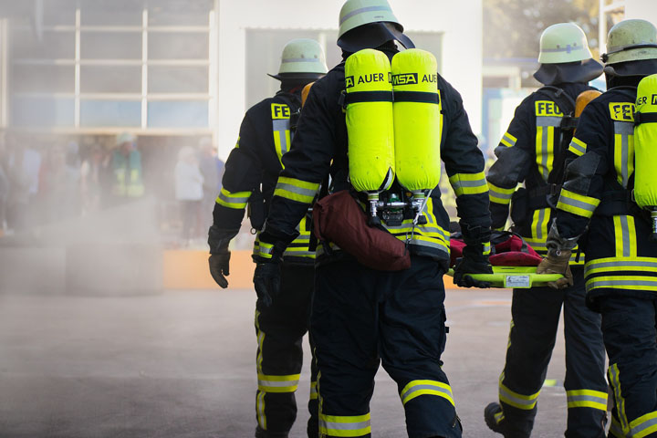

Fire Fighter
Responsibilities :
• Provide supervision and leadership to Fire Fighters under their command. This includes performing objective, unbiased performance reviews.
• Participate in the implementation of a comprehensive program to deliver fire safety risk assessments; testing of fire protection systems; and fire incident investigations in support of Foreign Military Sales contractors.
• Participate in the development and implementation of goals, objectives, policies and priorities for assigned programs; recommend and administer policies and procedures.
• Monitor and evaluate the efficiency and effectiveness of service delivery methods and procedures.
• Demonstrate sound leadership and decision-making skills.
• Foster an atmosphere of teamwork and camaraderie while maintaining a professional working relationship with subordinates.
• Train, motivate, and evaluate personnel; assist employees to correct deficiencies.
• Participate in the department physical fitness program.